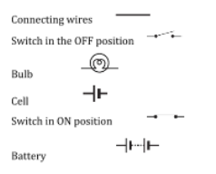

Exercise Questions
1) Draw in your notebook the symbols to represent the following components of electrical circuits: connecting wires, switch in the ‘OFF’ position, bulb, cell, switch in the ‘ON’ position.
Solution:
